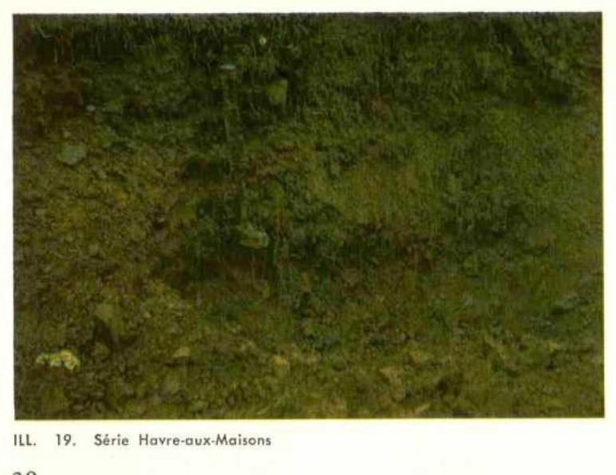

Identification & Caractéristiques Générales
La série Havre-Aux-Maisons s'est développée aux Îles-de-la-Madeleine sur un matériau originel constitué de sédiments argileux calcaires d'origine marine ou lagunaire, distincts du socle gréseux environnant. Ces dépôts quaternaires se situent principalement dans des contextes topographiques modelés par les mouvements salins et l'érosion insulaire, notamment dans les secteurs de l'île d'Havre-aux-Maisons et de Grand-Ruisseau sur l'île du Cap-aux-Meules. La topographie locale varie de plane à complexe, influençant directement le ruissellement de surface et la redistribution hydrique au sein du paysage agricole.
Le profil pédologique présente une morphologie caractérisée par une différenciation s'étendant d'un humus de type mor ou oligotrophe en surface jusqu'à un horizon C argileux et calcaire en profondeur, dont la nature chimique a partiellement entravé le processus intense de podzolisation, orientant le profil vers un type podzol minimal ou brun boisé acide. Le drainage naturel de ces sols est généralement modéré à bon, bien que la texture argileuse impose une perméabilité interne restreinte. La réaction du sol est acide dans les horizons supérieurs sous couvert forestier ou prairial, tandis que la présence de carbonate en profondeur confère au matériau parental des affinités chimiques notables avec la série Grand-Ruisseau.
Sur le plan agronomique, ces sols possèdent un haut pouvoir de production soutenu par une forte capacité de rétention en eau et un pourcentage de saturation en bases favorable. Ils se prêtent à une grande variété de productions végétales, incluant les cultures fourragères et les grandes cultures. Toutefois, la gestion de cette série nécessite une attention particulière aux limitations imposées par la texture fine des horizons et la topographie parfois irrégulière, rendant indispensables des pratiques de travail du sol adaptées, un contrôle rigoureux de l'érosion hydrique sur les pentes, ainsi qu'un chaulage d'ajustement pour neutraliser l'acidité superficielle lorsque requis.
Classification Taxonomique & Environnement Pédologique
| Ordre Pédologique | Brunisolique |
|---|---|
| Grand Groupe (SCSS) | Brunisol sombrique |
| Sous-Groupe Taxonomique | Brunisol sombrique éluvié |
| Famille Pédologique | Argileuse-fine, mixte argileux, neutre |
| Mode de Dépôt Parental | Morainique |
| Classe de Drainage Naturel | Bien drainé |
| Régime Thermique & Humidité | Frais / Subhumide |
Description Morphologique du Profil Type
Séquence génétique des horizons pédologiques caractérisant le profil type représentatif de la série Havre-Aux-Maisons :
Profil représentatif — Pédologie des Îles-de-la-Madelei
✓ Source : Pédologie des Îles-de-la-Madelei — Page 30Couleur Munsell : 10YR 4/3, 10YR 6/3
Structure & Consistance : Polyédrique à granulaire
Description morphologique : Loam brun foncé (10YR 4/3); brun pâle à sec (10YR 6/3); grumeleux; friable et perméable; très fortement acide.
Couleur Munsell : 5YR 2/1
Structure & Consistance : Polyédrique à granulaire
Description morphologique : Matière organique mésotrophe, noir à sec (5YR 2/1); extrêmement acide.
Couleur Munsell : 5YR 7/3
Structure & Consistance : Polyédrique à granulaire
Description morphologique : Loam rose (5YR 7/3); en agrégats fins; friable; perméable; très fortement acide.
Couleur Munsell : 5YR 4/4
Structure & Consistance : Polyédrique à granulaire
Description morphologique : Loam brun rouge (5YR 4/4); en agrégats fins; friable; perméable; très fortement acide.
Couleur Munsell : 10R 3/6, 10R 5/1
Structure & Consistance : Polyédrique à granulaire
Description morphologique : Argile rouge foncé (10R 3/6) avec de grandes taches gris rouge (10R 5/1) et blanc; particulaire; massive; perméabilité lente; fortement à moyennement acide; réaction neutre à 30 pouces.
Profils Photographiques & Planches de Terrain
Documents iconographiques, figures pédologiques et coupes de terrain documentées dans les mémoires d'inventaire pour de la série Havre-Aux-Maisons :

Propriétés Physico-Chimiques & Analyses de Laboratoire
| Horizon | Prof. (pces/cm) | Sable % | Limon % | Argile % | pH | C % | N % | Ca éch. | Mg éch. | K éch. | H+ éch. | Bases tot. | C.E.C. (meq/100g) | Saturation % |
|---|---|---|---|---|---|---|---|---|---|---|---|---|---|---|
| L-H | 0 - 4 | 3.8 | 26.31 | 0.87 | 1.8 | 4.7 | 1.0 | 72.0 | 7.5 | 79.5 | 9.4 | |||
| Aej | 4 - 7 | 41.6 | 32.0 | 26.4 | 4.5 | 2.87 | 0.17 | 1.0 | 2.5 | 0.1 | 12.0 | 3.6 | 15.6 | 23.0 |
| Bf | 7 - 12 | 51.6 | 24.0 | 24.4 | 4.8 | 1.14 | 0.08 | 0.8 | 1.5 | 0.1 | 6.0 | 2.4 | 8.4 | 22.5 |
| C | 12 | 23.6 | 32.0 | 44.4 | 5.2 | 0.61 | 0.06 | 2.0 | 3.8 | 0.1 | 4.0 | 5.9 | 9.9 | 59.5 |
Particularités Régionales, Phases & Variantes Pédologiques
Déclinaisons régionales, faciès texturaux, phases d'érosion ou de pierrosité et variantes cartographiées par étude pour de la série Havre-Aux-Maisons :
| Étude Régionale | Symbole | Appellation / Phase / Variante | Différenciation avec la série type (Analyse pédologique) |
|---|---|---|---|
| Pédologie des Ïles-de-la-Madeleine | Ma |
Havre-aux-Maisons loam | Modalité modale de référence (type de base de la série). |
| Pédologie des Îles-de-la-Madelei | HVX |
Série Havre-aux-Maisons (Ma) | Conforme à la série type de référence (caractéristiques texturales et drainage identiques). |
Distribution Pédo-Paysagère & Représentativité Cartographique (Couverture PPS 2026)
- Grand-Ruisseau loam argileux (GIS) — co-occurrente dans 7 polygone(s)
- Étang du Nord sable fin (EGU) — co-occurrente dans 4 polygone(s)
- Les Demoiselles loam à loam sableux (LML) — co-occurrente dans 3 polygone(s)
Aptitudes Agronomiques, Hydropédologie & Conservation des Sols
Indicateurs Hydropédologiques & Vulnérabilité à l'Érosion (BDHP 2026)
Interprétation BDHP : Potentiel de ruissellement modérément faible. Infiltration modérée avec textures moyennes à modérément grossières.
Classement selon l'Inventaire des Terres du Canada (ITC / CLI) : Classe 2c.
- Potentiel agricole : Terroir adapté aux cultures régionales selon la texture dominante et la régie de drainage.
- Contraintes majeures : Bien drainé. Risque d'engorgement temporaire ou d'excès d'eau printanier.
- Gestion & Aménagement : Drainage souterrain ou superficiel préconisé sur les terres planes. Chaulage et apport organique régulier selon les bilans agronomiques.
- Cultures adaptées : Grandes cultures (maïs, soya, céréales), prairies fourragères et cultures maraîchères selon le contexte géomorphologique.